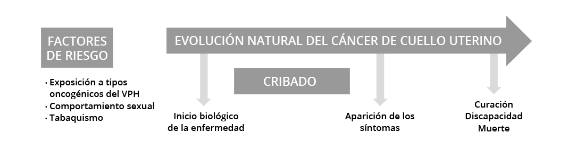

La historia natural de la enfermedad es la progresión de una
enfermedad a lo largo del tiempo. Entender cómo una enfermedad
evoluciona es fundamental para saber qué podemos hacer para evitar
su progresión.
Muchas enfermedades presentan ciertas etapas relativamente bien
definidas y conocidas en las que se pueden aplicar diferentes
tipos de medidas preventivas. Por ejemplo, la
FIGURA 1 muestra diferentes etapas
bien conocidas de la evolución natural del cáncer de cuello
uterino.
FIGURA 1 Historia natural
del cáncer de cuello uterino y tipos de medidas preventivas.
Población susceptible:
Ausencia de enfermedad
Estadio preclínico:
Asintomática
Estadio clínico:
Enfermedad sintomática

El proceso de la enfermedad comienza con la exposición a
factores de riesgo y etiológicos en un huésped susceptible
[1]Principles of Epidemiology | Lesson 1 - Section 9
[Internet]. 2020 [cited 2020 Nov 20]..
En esta etapa, la prevención primaria
[2]Eeles RA, Tobias JS, Berg CD, editors. Cancer prevention
and screening: concepts, principles and
controversies.
se centra en proteger a las personas sanas frente a la
aparición biológica de enfermedades por medio de
intervenciones de promoción y protección de la salud. Por
ello, el objetivo de las estrategias de prevención primaria es
reducir la incidencia de la enfermedad eliminando la
exposición a los factores de riesgo o aumentando la
resistencia de la población a los mismos.
En el cáncer de cuello uterino, la principal acción de
prevención primaria es evitar la exposición a los tipos
oncogénicos del VPH (que son la causa necesaria del cáncer de
cuello uterino) a través de la vacunación.
En algunas personas, se desencadena el proceso de la
enfermedad y se inician los cambios patológicos, por lo
general, sin que estas personas sean conscientes de ello
(asintomáticas). Esto se conoce como fase subclínica de la
enfermedad o período de latencia.
En esta etapa, la prevención secundaria o cribado
[2]Eeles RA, Tobias JS, Berg CD, editors. Cancer prevention
and screening: concepts, principles and
controversies.
consiste en la aplicación sistemática de pruebas seguras,
fáciles de usar y económicamente asequibles para conseguir un
diagnóstico precoz de la enfermedad, seguido de un tratamiento
oportuno. El objetivo de la prevención secundaria es
identificar la existencia de problemas de salud antes de que
empeoren, proporcionar tratamiento en una fase temprana y
mejorar el pronóstico de la enfermedad. Así pues, el cribado
tiene como objetivo reducir la prevalencia de la enfermedad,
acortando su duración, reduciendo la incidencia de las
complicaciones asociadas a la enfermedad y aumentando la
calidad de vida de las personas afectadas por la enfermedad.
En el cáncer de cuello uterino, pueden pasar décadas hasta que
la infección por el VPH progrese a cáncer. Por lo tanto, la
prevención secundaria consiste en la detección de lesiones
precancerosas causadas por la infección persistente por el VPH
mediante citología o pruebas del VPH.
En un momento dado, la enfermedad empieza a ser sintomática y
las personas buscan asistencia médica. En última instancia, el
proceso patológico finaliza en recuperación, la discapacidad o
la muerte.
La prevención terciaria tiene como objetivo reducir las
repercusiones de una enfermedad en curso. Consiste en
controlar la enfermedad a largo plazo (evitar las
complicaciones y las recaídas) para reducir la morbilidad, la
discapacidad y la mortalidad entre las personas diagnosticadas
y que reciben tratamiento para la enfermedad.
La presentación y el curso del cáncer varían en diferentes
personas y contextos, incluso en el caso de la misma
enfermedad. En el caso del cáncer de cuello uterino, las
infecciones por el VPH pueden no evolucionar nunca a cáncer en
muchas mujeres, pero en otras pocas, el proceso puede provocar
una enfermedad grave o mortal. Esto se llama espectro de
enfermedad.
A continuación se muestran las diferentes estrategias o
intervenciones que se están utilizando para prevenir la
exposición al VPH, su progresión hacia el cáncer de cuello
uterino y las medidas paliativas una vez diagnosticado el
cáncer.
Un grupo de expertos evaluó los datos disponibles sobre la
prevención del cáncer para elaborar el Código Europeo contra
el Cáncer
[3]Schüz J, Espina C, Villain P, Herrero R, Leon ME,
Minozzi S, et al. European Code against Cancer 4th
Edition: 12 ways to reduce your cancer risk., una lista de 12 recomendaciones sobre las medidas que los
ciudadanos europeos pueden adoptar para ayudar a prevenir el
cáncer:
- No fume. No consuma ningún tipo de tabaco.
-
Haga de su casa un hogar sin humo. Apoye las políticas
antitabaco en su lugar de trabajo.
- Mantenga un peso saludable.
-
Haga ejercicio a diario. Limite el tiempo que pasa
sentado/a.
-
Coma saludablemente:
-
Consuma una gran cantidad de cereales integrales,
legumbres, frutas y verduras.
-
Limite los alimentos hipercalóricos (ricos en azúcar o
grasa) y evite las bebidas azucaradas.
-
Evite la carne procesada; limite la carne roja y los
alimentos con alto contenido en sal.
-
Limite el consumo de alcohol, aunque lo mejor para la
prevención del cáncer es evitar las bebidas alcohólicas.
-
Evite la exposición excesiva al sol, sobre todo en niños.
Utilice protección solar. No use cabinas de rayos UVA.
-
En el trabajo, protéjase de las sustancias cancerígenas
cumpliendo las instrucciones de la normativa de protección
de la salud y seguridad laboral.
-
Averigüe si está expuesto a la radiación procedente de
altos niveles naturales de radón en su domicilio y tome
medidas para reducirlos.
-
Para las mujeres:
La lactancia materna reduce el
riesgo de cáncer de la madre. Si puede, amamante a su
bebé.
La terapia hormonal sustitutiva (THS) aumenta
el riesgo de ciertos cánceres, limítelo.
-
Asegúrese de que sus hijos participan en programas de
vacunación contra:
- La hepatitis B (los recién nacidos)
- El virus del papiloma humano (VPH) (las niñas)
-
Participe en programas organizados de cribado del cáncer:
- Cáncer de colon (hombres y mujeres)
- Cáncer de mama
- Cáncer del cuello uterino (mujeres)
Además, el éxito de la prevención del cáncer exige que estas
acciones individuales se vean respaldadas por políticas y acciones
gubernamentales.
Para obtener más información sobre el Código Europeo contra el
Cáncer
consulte este sitio web
[3]Schüz J, Espina C, Villain P, Herrero R, Leon ME, Minozzi S,
et al. European Code against Cancer 4th Edition: 12 ways to
reduce your cancer risk.,[4]Código Europeo contra el cáncer. 12 formas de reducir el
riesgo de cáncer..
|
Código Europeo contra el cáncer. 12 formas de reducir el
riesgo de cáncer
|
| 1 |
No fume. No consuma ningún tipo de tabaco. |
| 2 |
Haga de su casa un hogar sin humo. Apoye las políticas
antitabaco en su lugar de trabajo.
|
| 3 |
Mantenga un peso saludable. |
| 4 |
Haga ejercicio a diario. Limite el tiempo que pasa sentado.
|
| 5 |
Coma saludablemente:
-
Consuma gran cantidad de cereales integrales, legumbres,
frutas y verduras.
-
Limite los alimentos hipercalóricos (ricos en azúcar o
grasa) y evite las bebidas azucaradas.
-
Evite la carne procesada; limite el consumo de carne
roja y de alimentos con mucha sal.
|
| 6 |
Limite el consumo de alcohol, aunque lo mejor para la
prevención del cáncer es evitar las bebidas alcohólicas.
|
| 7 |
Evite una exposición excesiva al sol, sobre todo en niños.
Utilice protección solar. No use cabinas de rayos UVA.
|
| 8 |
En el trabajo, protéjase de las sustancias cancerígenas
cumpliendo las instrucciones de la normativa de protección
de la salud y seguridad laboral.
|
| 9 |
Averigüe si está expuesto a la radiación procedente de altos
niveles naturales de radón en su domicilio y tome medidas
para reducirlos.
|
| 10 |
Para las mujeres:
-
La lactancia materna reduce el riesgo de cáncer de la
madre. Si puede, amamante a su bebé.
-
La terapia hormonal sustitutiva (THS) aumenta el riesgo
de determinados tipos de cáncer. Limite el tratamiento
con THS.
|
| 11 |
Asegúrese de que sus hijos participan en programas de
vacunación contra:
- La hepatitis B (los recién nacidos).
- El virus del papiloma humano (VPH) (las niñas).
|
| 12 |
Participe en programas organizados de cribado del cáncer:
- Colorrectal (hombres y mujeres).
- De mama (mujeres).
- Cervicouterino (mujeres).
|
|
El Código Europeo contra el Cáncer se centra en medidas que
cada ciudadano puede tomar para contribuir a prevenir el
cáncer. El éxito de la prevención del cáncer exige que las
políticas y acciones gubernamentales apoyen estas acciones
individuales.
|